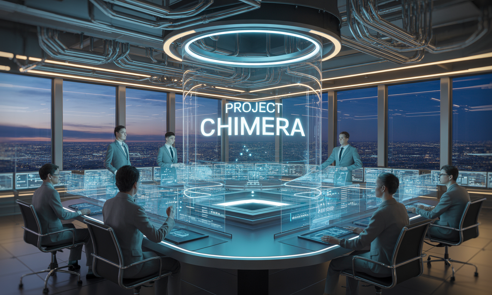

intelligence-core - rag - biz intelligence
biz intelligence
"SISTAR Biz Intelligence & sisAI Reports — Overnight autonomous data harvesting and dual-engine Enterprise RAG delivering zero-hallucination market feasibility and pricing intelligence."
▫️ sisAI Business Intelligence & Overnight Data Factory Synthesis
Operating unmanned every night from 10:00 PM to 8:00 AM, SISTAR Biz Intelligence (sisAI) converts raw global web signals into structured corporate memory:
- • Automated Global Market & Tariff Scraping: Headless browser agents and Open APIs harvest B2B wholesale pricing, regional e-commerce rankings, HS-code customs regulations, and clinical literature across target markets.
- • Two-Phase RAG Architecture (NotebookLM + Dify Vector DB): Centralizes raw intelligence and internal Google Drive files into subject-specific Gemini NotebookLM repositories and project-specific Dify RAG workflows.
- • Actionable Executive & B2B Feasibility Reports: Produces daily 8:00 AM executive briefings, dynamic pricing parameters, and comprehensive sisAI Business Reports that de-risk every cross-border trade and SaaS launch.
▫️ Detailed Archive: sisAI Business Report
Comprehensive operational records, strategic frameworks, and source specifications preserved from sisAI Business Report:
- • The Central Intelligence Unit of SISTAR Company
- • sisAI is the specialized, independent unit within SISTAR Company dedicated to the professionalization and leadership of all AI activities. Its core mission is to be the central intelligence unit that develops, deploys, and manages AI for both internal management and external commercial applications.
- • By centralizing AI development, SISTAR Company ensures a unified, strategic approach to a technology that is a key differentiator across its entire portfolio of subsidiaries. sisAI's business model is to be a profit center, generating revenue by providing its cutting-edge AI services to both internal SISTAR companies and external clients.
- • Core Business Model: AI-as-a-Service
- • sisAI operates on a multi-tiered, AI-as-a-Service model, delivering value across the entire SISTAR ecosystem and beyond.
- • Acting as internal consultant and development partner for SISTAR Company and its subsidiaries
- • Commercial Applications
- • External-facing services generating revenue through productized expertise and client solutions
- • AI for Internal Management
- • This is sisAI's foundational role. It acts as an internal consultant and development partner for SISTAR Company and its subsidiaries. This includes:
- • Operational Optimization
- • Deploying AI to streamline workflows, such as automated inventory management for SISTAR Mint and predictive analytics for supply chain efficiency.
- • Data-Driven Decision Making
- • Using AI to analyze vast datasets from all subsidiaries to provide actionable insights for strategic planning, market forecasting, and resource allocation.
- • Enhanced Internal Tools
- • Developing AI-powered tools for employee productivity, such as intelligent content curation for SISTAR Studio and automated report generation for BIONDI.
- • Operational Optimization in Action
- • Automated Inventory Management
- • Real-time inventory tracking
- • Demand forecasting algorithms
- • Automated reorder systems
- • Supply chain optimization
- • AI for Commercial Applications
- • sisAI's external-facing services are where it becomes a revenue-generating unit. It productizes its expertise and offers it to clients outside of the SISTAR ecosystem. This includes:
- • Developing and licensing platforms like Scarlet.ai, which use AI for personalized e-commerce , and SISTAR Academy, which uses AI for personalized education. These platforms are sold or licensed to other businesses.
- • AI Consulting Services
- • Offering its expertise to help other companies integrate AI into their operations, a service that BIONDI can then use as a key differentiator for its territorial expansion efforts .
- • Anonymizing and analyzing data from its ecosystem to sell market insights and predictive analytics to other companies.
- • AI-Powered Platform Solutions
- • AI for personalized e-commerce platforms that deliver customized shopping experiences and drive conversion rates.
- • AI-driven personalized education platform that adapts learning paths to individual student needs and learning styles.
- • Strategic Innovation Hub
- • sisAI is the innovation hub of SISTAR Company. By centralizing all AI development, it ensures that every subsidiary benefits from a single, powerful, and continuously evolving AI core.
- • This allows SISTAR to maintain a significant competitive advantage in its diverse markets, from e-commerce to education.
- • Continuous AI research and development
- • Unified AI deployment across subsidiaries
- • Market leadership through AI differentiation
- • Over time, sisAI is poised to become a profitable entity in its own right , selling its expertise and proprietary AI technology to a global market and reinforcing SISTAR's position as a leader in the age of AI-driven business.
- • Optimizing SISTAR ecosystem operations
- • Global AI services and consulting
- • Defining the future of AI-driven business
- • The Future of AI-Driven Business
- • sisAI represents SISTAR Company's commitment to leading the transformation of business through artificial intelligence. As the central intelligence unit, it ensures unified strategy, competitive advantage, and profitable growth across all markets.
- • "By centralizing AI development, SISTAR Company ensures a unified, strategic approach to a technology that is a key differentiator across its entire portfolio of subsidiaries."
